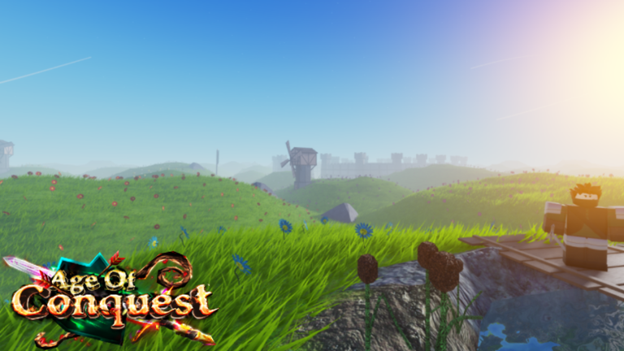
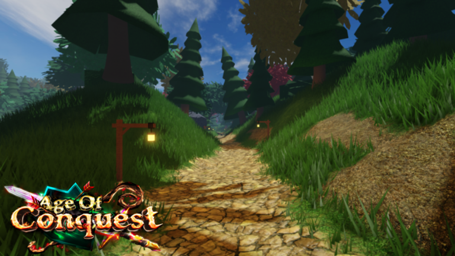
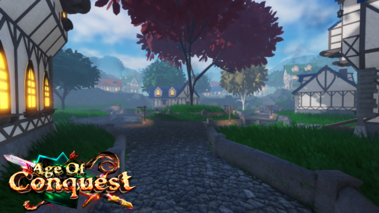
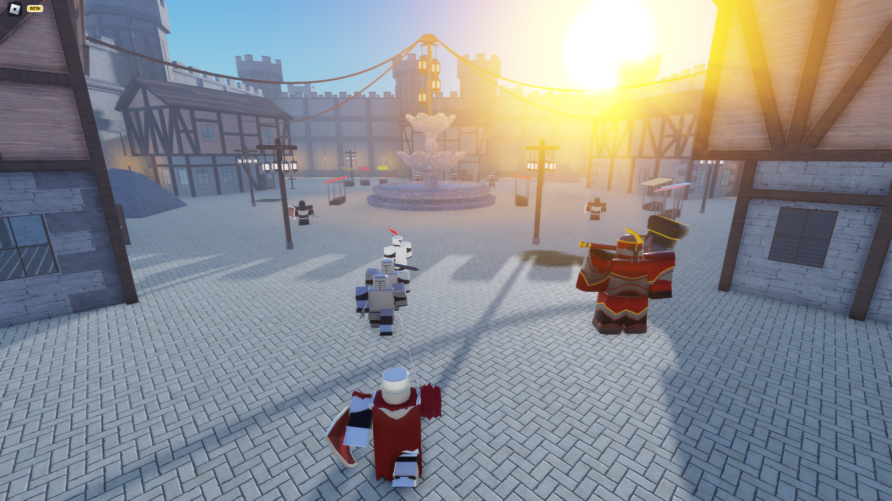
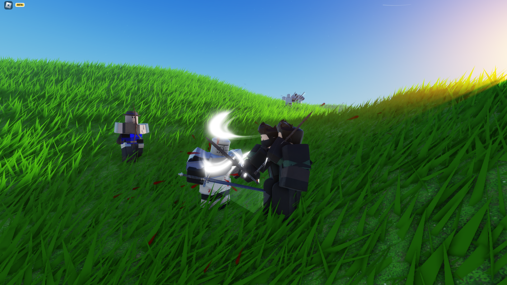
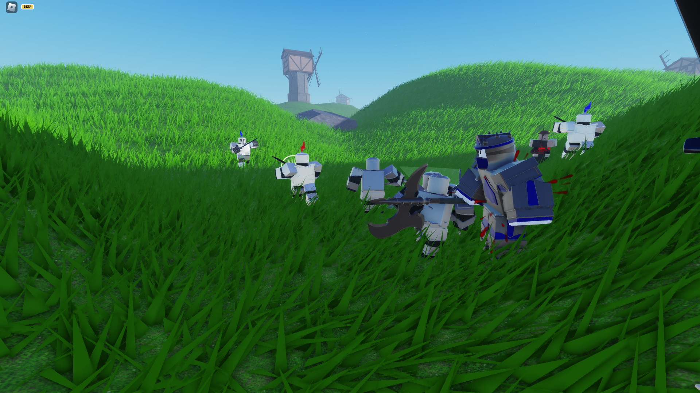
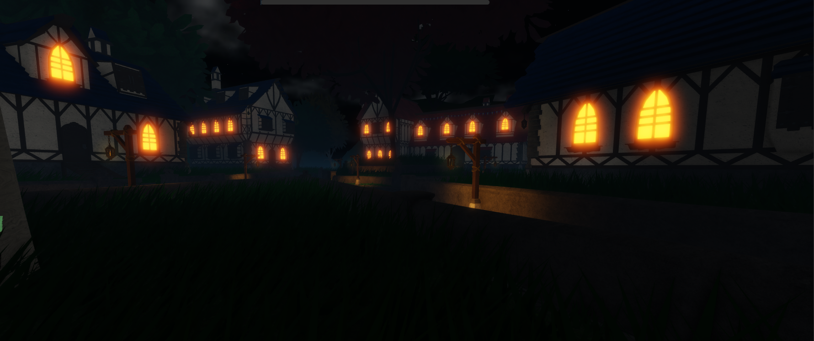
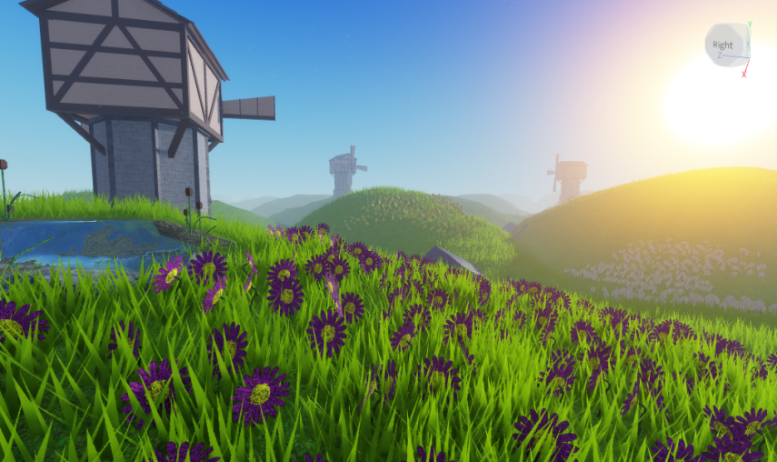

Aperçu du projet
Age of Conquest est un MMORPG et un jeu d'action aventure avec trois modes de jeux distincts et une panoplie de contenu, comme des dizaines d'ennemis, d'armes et d'armures. Chaque mode de jeu peut être joué à plusieurs ou seul.
Démo
Images
       Conception et design
Modes de jeu
Campagne
Le mode de campagne est fixé sur le PvE (joueurs contre IA) à travers divers objectifs que le joueur complète durant des missions, seul ou avec jusqu'à 3 coéquipiers.
Ce mode semble plutôt simple en surface, mais il est le plus compliqué à développer, car il exige des niveaux fait à la main et raffiné spécifiquement pour que le joueur puisse les explorer et accomplir certaines tâches programmées et personnalisé spécifiquement pour une mission, afin de les rendre uniques et variées. Le joueur peut explorer les niveaux pour recevoir plus de récompenses, il peut éviter certains objectifs optionnels s'il veut être plus rapide et il a parfois la possibilité de compléter certains objectifs de différentes manières.
La récompense obtenue par le joueur à la fin du niveau est complètement déterminée par le score qu'il obtient. Le score est déterminé par le nombre d'ennemis tués, du temps mis pour terminer la mission, en plus du nombre de morts. Ces facteurs vont déterminer le score, ce qui va dicter le pourcentage d'un total de nombre de points d'expériences et d'or qui peuvent être obtenus lors de la réalisation du niveau. En général, si le pourcentage des récompenses est au-dessus de 50%, ça garantit le joueur de gagner au moins un item, même s'il a échoué la mission pour quelconque raison (comme manque de temps ou manque de vies). Ce système s'applique à tous les autres modes de jeux.
Survie
Le mode de survie ou les joueurs, en équipe de jusqu'à 10, doivent protéger leur base de vagues d'ennemis divers tout en gérant leurs fonds pour augmenter leurs propres statistiques au fil de la partie. Ce mode est le mode le plus simple et le plus direct d'Age of Conquest, mais il possède tout de même ses propres mécaniques qui le font ressortir du lot.
Le cœur de ce mode de jeu est déterminé par le système d'apparitions des ennemis. Avant chaque début d'une nouvelle vague d'ennemis, le jeu détermine le type de difficulté approprié pour la vague et, parmi les vagues préfabriqués de chaque type, il en choisit une au hasard, puis il fait apparaître les ennemis dans celle-ci. Toutefois, cela n'est pas automatique. Le système détermine en premier s'il y a assez de joueurs présents pour faire apparaître chaque ennemi dans la vague. Après, il démarre un compte à rebours pour les ennemis qui prennent du temps à apparaître, car ça ne serait pas naturel si tous les ennemis d'une vague apparaissaient tous en même temps. Si les ennemis qui apparaissent au début de la vague sont éliminés avant que le compte à rebours des prochains ennemis termine, les ennemis avec le plus petit compte à rebours vont tous apparaître en même temps. Chaque vague possède aussi une limite de temps, pour éviter que les joueurs jouent passivement. Ce système d'apparition d'ennemis s'applique, en partie, également au mode de campagne.
En plus d'augmenter le multiplicateur de difficulté à chaque fin de vague, le système donne alloue aussi un nombre de fonds au joueur. Ce nombre est déterminé par la difficulté de la vague dont les joueurs ont survécu. Il est aussi grandement affecté par le temps qui a été pris pour compléter la vague, ainsi que le nombre de joueurs qui sont morts durant celle-ci. Ces fonds sont distribués au joueur à la fin de la vague et peuvent ensuite être utilisés dans un menu exclusif au mode de survie, qui contient une liste de statistiques propre aux joueurs de l'équipe, comme leur multiplicateur de dégâts, leurs points de vie bonus, leur vitesse d'attaque, etc. Chaque statistique coûte un certain montant de fonds à augmenter. Les fonds servent aussi à améliorer des murs qui protègent la base des joueurs au début du mode de survie. Par contre, les vagues d'ennemis peuvent facilement les détruire si les joueurs ne les défendent pas.
Bataille en équipe
Finalement, le mode de bataille en équipe permet au joueur de se battre contre à la fois d'autres joueurs ainsi que des ennemis. C'est le mode le plus complexe d'Age of Conquest, contenant nombreux mécanique unique au mode, en plus de la présence de l'aspect PvP (joueur contre joueur) Le but de chaque équipe doit éliminer le Général (Type d'ennemi boss) de l'équipe adverse tout en défendant le sien.
Au début de la partie, les joueurs vont avoir à voter pour un chef d'équipe, qui pourra ensuite embaucher des travailleurs qui vont augmenter les fonds de l'équipe qui lui serviront aussi à invoquer des renforts ou un boss. Les joueurs qui ne sont pas chef d'équipe ont aussi droit à leur propre réserve de fonds, qui peut leur servir à réparer ou améliorer des structures, certaines structures servent à défendre une base et à fournir des bonus aux défenseurs IA d'un camp, d'autres peuvent abriter des archers qui réapparaissent tant que la structure n'est pas détruite, et enfin, il y a les casernes, qui produisent périodiquement des ennemis selon leur niveau d'amélioration. Les fonds de joueurs peuvent aussi servir à acheter des avant-postes qui fournissent périodiquement plus d'alliés.
Les joueurs accumulent des fonds en éliminant des ennemis ou des joueurs de l'autre camp, mais ils ne peuvent pas être trop précipités, car ils perdent une grande portion de leur fonds à chaque mort. Se ruer vers la base du camp ennemi tout seul n'est pas encouragée parce que celles-ci sont beaucoup trop puissante pour un joueur qui n'est pas accompagné, surtout au début de la partie. Pour balancer les combats entre joueurs, le niveau d'équipement est ajusté selon l'adversaire. De cette façon, les joueurs de bas niveau ont toujours une chance face aux joueurs plus expérimentés.
Les cartes et les niveaux du mode sont équilibrés autour d'un niveau minimum ainsi que d'un niveau « maximum » (les statistiques d'un joueur plafonnent s'ils sont par-dessus le maximum). Certains aspects du jeu et types d'ennemis ne sont qu'accessibles dans les cartes exigeant des plus haut niveaux pour ne pas accabler le joueur dès le début.
Combat et Gameplay
Pour ce qui est des combats contre les ennemis, le joueur a droit à cinq armes qui peuvent rester équipées en tout temps. La plupart des armes sont uniques
et elles correspondent toutes à une des trois classes qui déterminent le style de jeu du joueur. La classe de mêlée brandit des armes au corps à corps, qui utilisent des hitboxes faites avec des raycasts
(ce système est le même pour les ennemis), chaque catégorie d'armes en mêlée porte ses propres attaques, animations et hitboxes, en plus d'attaquer à une vitesse différente les unes des autres. Elles ont toutes droit à une attaque spéciale, qui
consomme de l'énergie a un temps de recharge prédéterminé.
Pour encourager l'agressivité, mais aussi punir l'imprudence, les joueurs deviennent vulnérables lorsqu'ils commencent une attaque, car ils ne peuvent pas performer d'autres actions,
leur état change (comme une State-Machine). Toutefois, le temps de récupération une fois l'attaque est terminé est très court, laissant souvent les joueurs le temps d'éviter ou parer la prochaine attaque.
Pour invalider les attaques ennemies, le joueur a trois options principales: esquiver (roulade), parer ou bloquer. La roulade donne du temps d'invincibilité au joueur et permet de se repositionner,
celle-ci est surtout efficace lors des combats contre un grand nombre d'ennemis. Toutefois, la roulade coûte beaucoup d'énergie et le « timing » peut être difficile. Pour éviter que les joueurs
surutilisent les esquives, l'énergie consommée par les roulades augmente avec chaque esquive successive. Le joueur gagne aussi l'option de
bloquer ou de parer en utilisant le même bouton/touche. Si le « timing » de la parade est bon, le joueur peut nullifier tous les dégâts de l'ennemi et infliger des dégâts de posture, il y a très peu
d'inconvénients. Si le « timing » du joueur est mauvais par contre, la parade devient un blocage, ce qui est beaucoup moins efficace. Bloquer fait perdre au joueur de l'énergie, en plus de faire monter sa
propre barre de posture. En plus, certaines attaques ne peuvent pas être bloquées, celles-ci sont indiquées par des marqueurs rouges. Pour éviter que le joueur surutilise les parades, le laps de temps donné au joueur pour
correctement « time » sa parade devient de plus en plus petite avec chaque parade successive.
Qu'est-ce que la posture d'un joueur/ennemi? C'est la barre qui détermine quand un personnage deviendra vulnérable, il prendra plusieurs fois plus de dégâts. Pour rendre les ennemis vulnérables, il faut
les parer et/ou les attaquer pendant qu'ils bloquent. Le système est très similaire à Sekiro: Shadows Die Twice.
Intelligence Artificielle
L'intelligence d'Age of Conquest est aussi complexe que modulaire. Pour que les ennemis puissent être utilisés dans tous les trois modes de jeu distinct, l'IA se repose sur trois types de mouvement: défensif, offensif et errant.
- Les IA défensives restent immobile jusqu'à ce qu'une cible entre leur portée d'attaque, si la cible les amènent trop loin, ils tentent de retourner à leur position de défense.
- Les IA offensives ont un chemin approximatif donné qui les dirigent vers un but spécifique, à l'aide du « Pathfinding ».
- Les IA errants sont comme les IA défensives, sauf qu'elles se promènent d'une certaine distance de leur point de départ.
Chaque IA possède aussi certains paramètres optionnels qui peuvent modifier ses comportements:
- Les statistiques d'une IA individuel peuvent être ajustées dans des cas spécifiques pour certaines missions ou certains niveaux (ex: Dégâts multiplicatif, vitesse, vitesse de course, vitesse d'attaque, la portée d'attaque, la vitesse d'une attaque spécifique, le temps de récupération, etc.)
- Faire infliger les attaques d'un IA des effets de status, comme le feu ou la glace.
- Une IA peut être enragé, le faisant attaquer plus vite.
- Une IA peut avoir un champ de vision limité.
- D'autres IA peuvent également suivre les joueurs s'ils ont l'option « Follower », ce système est utilisé dans le tutoriel.
- Avoir un nom spécial.
- Être plus grand/petit.
- Être plus résistant ou immuniser contre certains effects, comme le feu.
- Fuir les cibles au lieu de les attaquer.
Pour que les combats restent équitables, les IA ne peuvent pas normalement attaquer un joueur à plusieurs en même temps. En général, le joueur ne peut se faire attaquer que par un ennemi en mêlée, et par un ennemi à distance. Toutefois, cette contrainte peut être contournée, si un IA est accordé le droit de le faire, étant donné que le joueur est assez proche. Elle peut être aussi contournée si le joueur se trouve dans la base ennemie, ou il peut être ciblé par un grand nombre d'IA. Heureusement, les IA ont beaucoup plus de difficultés à poursuivre les joueurs lorsqu'ils se font attaquer par d'autres IA, ils perdent donc une grande partie de leur force rotationnelle et leur vélocité, rendant les esquives idéales pour les combats à plusieurs.
Enfin, au niveau des combats eux-mêmes chaque type d'ennemi possède ses propres animations et attaques avec leur propre temps d'attaque et de récupération. Les IA d'Age of Conquest sont des « state machines », et donc, elles réagissent en changeant d'état, selon à quoi elle fait face. À chaque fois qu'un joueur se bat contre une IA, celle-ci va élaborer une stratégie, selon l'état et la position/distance du joueur. Cette stratégie affecte ou l'IA va se positionner et quelle attaque elle va utiliser. Elle peut reculer si le joueur l'attaque, tenter d'encercler le joueur s'il se fait attaquer par d'autres ennemis, ou elle peut foncer si le joueur est trop loin. Puis, elle peut décider laquelle de ses attaques elle devrait utiliser, si son adversaire est à la bonne distance. Les ennemis en mêlée peuvent, en général, bloquer les coups de leurs adversaires, au risque de devenir vulnérable si leur posture se brise. D'autres peuvent esquiver les attaques, mais ils ne reçoivent pas de temps d'invincibilité pour éviter de frustrer les joueurs. Le tout est déterminé par une poignée de fonctions dans un seul script, lorsqu'il est fourni les paramètres d'un IA en combat. Le système réutilise le moins de code possible.